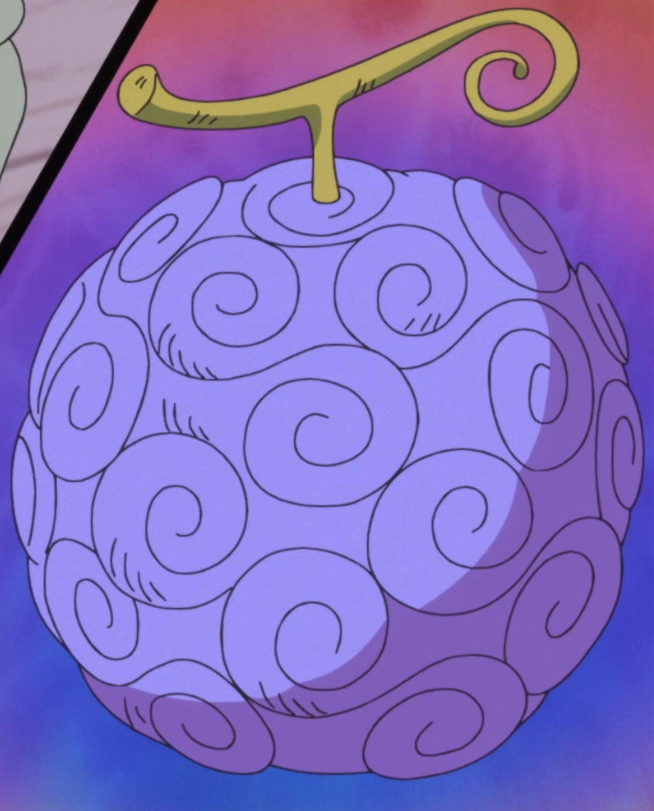
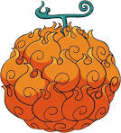

Enciclopedia de todas as frutas existentes em one piece
Hito hito no mi/modelo nika

Uma fruta do tipo zoan mitica, que garante ao usuario os poderes do deus do sol nika,no começo do anime chamada de
gomu gomu no mi a fruta da borraccha
Mera mera no mi

Uma fruta do tipo logia, que garante ao usuario poderes de criar e manipular o fogo